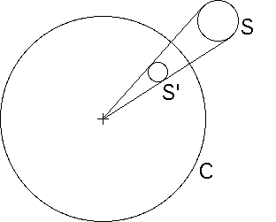

|  |
Suppose a set K outside C is encomapssed by the circloe S.
Then K', the inverse of K across C, is contained in S', the inverse of S across C.
From the picture, or from the formula for inverting circles, we see S' is smaller than S.
Consequently, K' is smaller than K.
(Slightly more care must be exercised with larger sets, for example, that wrap around C. But the idea is contained in the example pictured here.)
Return to properties of inversion.